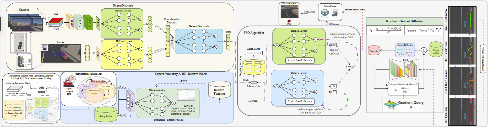

The IRL-DAL framework integrates four core components: a hybrid IL-IRL-RL training curriculum, an energy-guided diffusion planner, a learnable adaptive mask for contextual perception, and a safety-aware experience correction mechanism.
Performance Comparison
| Model | Mean Reward ↑ | Coll./1k Steps ↓ | Success (%) ↑ | BC Loss (×10-2) ↓ | Action Sim. (%) ↑ | ADE (m) ↓ | FDE (m) ↓ |
|---|---|---|---|---|---|---|---|
| PPO + Uniform Sampling | 85.2 ± 4.1 | 0.63 ± 0.12 | 78.1 ± 3.2 | 17.1 ± 1.4 | 65.3 ± 4.1 | 5.25 ± 0.31 | 11.8 ± 0.65 |
| + FSM Replay | 120.4 ± 3.8 (+41%) | 0.30 ± 0.08 | 88.4 ± 2.1 | 12.3 ± 1.1 | 75.1 ± 3.5 | 4.10 ± 0.27 | 9.5 ± 0.58 |
| + Diffusion Planner | 155.1 ± 3.2 (+29%) | 0.15 ± 0.05 | 92.0 ± 1.8 | 13.0 ± 1.0 | 80.2 ± 3.0 | 3.15 ± 0.22 | 7.2 ± 0.49 |
| + LAM + SAEC (Ours) | 180.7 ± 2.9 (+16%) | 0.05 ± 0.03 | 96.3 ± 1.2 | 7.4 ± 0.8 | 85.7 ± 2.4 | 2.45 ± 0.18 | 5.1 ± 0.41 |
Quantitative performance across architectural variants (10 seeds, mean ± std). Mean reward normalized to [0, 200]. Trajectory prediction metrics (ADE/FDE) from rollout evaluation. Arrows indicate improvement direction; bold denotes best.
Two-Phase Training Curriculum
To ensure stable convergence and sample efficiency, our agent is trained via a two-phase curriculum. Phase 1 (Behavioral Cloning) involves pre-training the policy for 20,000 steps using an expert dataset generated by a Finite State Machine (FSM). This establishes a robust behavioral prior, teaching the agent fundamental driving skills. Phase 2 (IRL-PPO) fine-tunes the policy for 30,000 steps using a hybrid reward signal. This signal combines sparse task rewards with a dense, GAIL-based imitation reward, encouraging the agent to explore complex scenarios while adhering to expert-like decision-making.

Energy-Guided Diffusion Planner
The Diffusion Planner acts as a critical, on-demand safety module. It is activated only in high-risk states identified by the base policy, making it computationally efficient. Upon activation, it generates a set of safe, short-horizon trajectories. The optimal trajectory is selected via a multi-objective energy function that expertly balances three critical goals: lane adherence to maintain course, obstacle avoidance for collision prevention, and control smoothness (jerk minimization) to ensure passenger comfort and stability.
Learnable Adaptive Mask (LAM)
The Learnable Adaptive Mask (LAM) is a state-aware perception module designed for intelligent allocation of visual attention. It dynamically adjusts the agent's perceptual focus based on real-time driving context. At high speeds, rather than expanding to the horizon, LAM actively amplifies the lower visual field (near-field road features) to ensure precise lane tracking and lateral stability. Conversely, when LiDAR detects nearby hazards or in dense traffic, the mask intensifies focus on the immediate surroundings to facilitate rapid collision avoidance, offering an interpretable and efficient alternative to heavy self-attention layers.
Key Contributions
Our work introduces several novel contributions to the field of autonomous driving:
- Hybrid Learning Synthesis: A novel training framework that synergizes Behavioral Cloning for stable initialization, Inverse Reinforcement Learning (via GAIL) for dense, expert-aligned reward shaping, and Proximal Policy Optimization for robust exploration and refinement.
- Diffusion Planning as a Corrective Safety Layer: The first application of a conditional diffusion model as an on-demand, corrective safety planner for an active RL agent, ensuring safety compliance without stifling the policy's learning and exploration process.
- State-Guided Adaptive Perception: A lightweight and interpretable attention mechanism (LAM) that dynamically modulates feature extraction. It prioritizes near-field lane coherence during high-speed driving for lateral stability and highlights proximate surroundings when hazards are detected, ensuring efficient and context-aware visual processing.
- Safety-Aware Experience Correction (SAEC): A novel feedback loop where interventions from the safety planner are not discarded but are distilled into structured learning experiences. This allows the RL policy to learn directly from its near-failures, progressively enhancing its intrinsic safety.